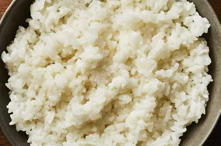

Sushi rice is less of a type of rice than it is a preparation method. It's cooked short-grain white rice combined with rice vinegar and other ingredients, cooled completely, and then used to make sushi rolls.